Cómo usar el sistema de gestión Xalachi
Guía paso a paso de cada módulo del sistema — inventario, compras, producción, servicios a terceros, pedidos, ventas, gastos y reportes — con capturas reales y qué puede hacer cada rol.
Primeros pasos
Para entrar al sistema, abre la URL del sitio y usa el correo y contraseña que te haya dado el administrador.
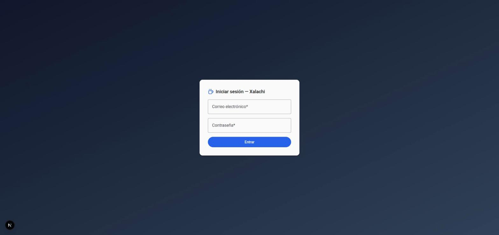
Una vez dentro, la pantalla de Inicio confirma con qué correo entraste y qué rol tienes asignado — es lo primero que debes revisar si algo del menú no se ve como esperas.
El menú lateral se ve igual para todos los roles (con una sola excepción: "Usuarios" solo aparece si eres administrador) — lo que cambia entre roles son los botones de crear/editar/eliminar dentro de cada pantalla, no qué módulos ves. Ver §02 Roles y permisos.
Roles y permisos
Hay tres roles. Un mismo usuario tiene siempre un solo rol, asignado por un administrador desde Usuarios.
A nivel de datos, cualquier usuario autenticado puede leer casi toda la información del sistema (es una decisión de diseño: simplifica el sistema y por ahora no hay necesidad real de ocultar datos entre roles internos). Lo que un rol no puede hacer es escribir: el sistema simplemente no le muestra los botones de crear, editar o eliminar en los módulos que no le corresponden.
| Módulo | Administrador | Operador | Vendedor |
|---|---|---|---|
| Catálogos de producción variedades, procesos, tueste, presentaciones, fincas, artículos | Lectura y escritura | Lectura y escritura | Solo lectura |
| Catálogos financieros proveedores, categorías de gasto | Lectura y escritura | Solo lectura | Solo lectura |
| Clientes | Lectura y escritura | Solo lectura | Lectura y escritura |
| Inventario y Producción | Lectura y escritura | Lectura y escritura | Solo lectura |
| Compras | Lectura y escritura | Solo lectura | Solo lectura |
| Servicios, Presupuestos, Pedidos, Ventas | Lectura y escritura | Solo lectura | Lectura y escritura |
| Gastos operativos | Lectura y escritura | Solo lectura | Solo lectura |
| Reportes | Solo lectura para todos — nadie escribe aquí, es un panel informativo | ||
| Usuarios (administración) | Lectura y escritura | Sin acceso | Sin acceso |
Reglas especiales a tener en cuenta
- Un administrador no puede suspender su propia cuenta (para evitar quedarse fuera del sistema por accidente).
- Un Pedido o Presupuesto solo se puede editar mientras está en estado "Borrador" — en cuanto se confirma/aprueba, queda fijo (ver §09 y §08).
- Eliminar (no solo editar) está casi siempre restringido a administrador, aunque crear/editar sea compartido con operador o vendedor.
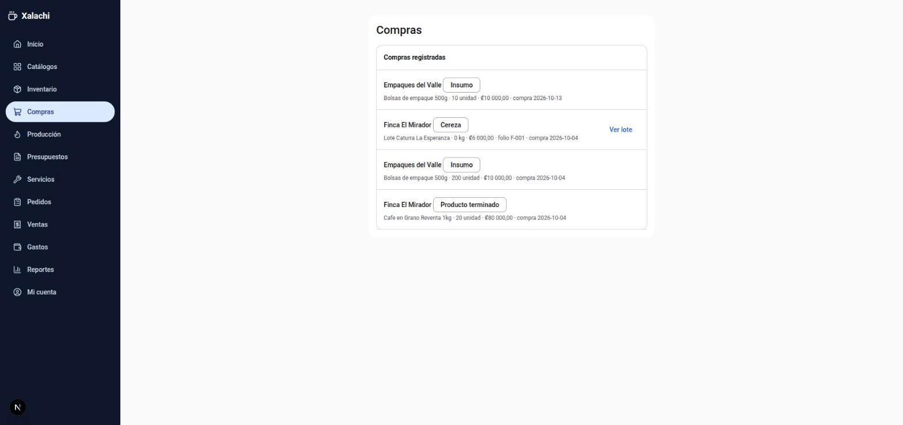
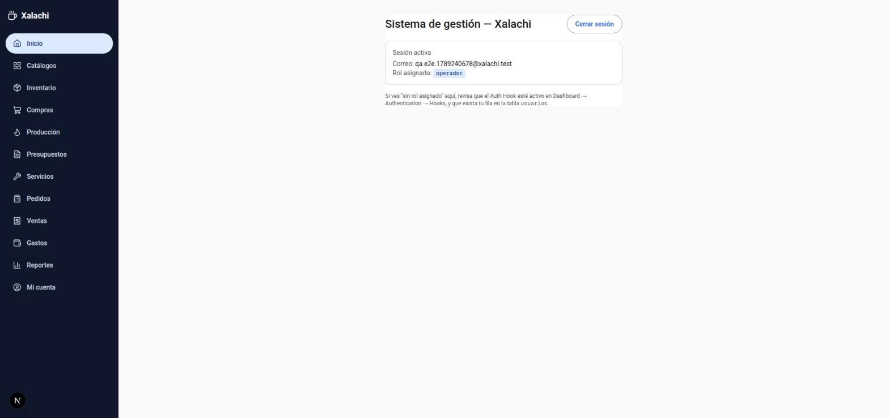
/usuarios directamente, el sistema lo regresa a Inicio.Catálogos
Los catálogos son las listas base que usa todo el sistema: variedades de café, procesos de beneficiado, perfiles de tueste, presentaciones de empaque, proveedores, clientes, fincas, artículos (insumos y productos) y categorías de gasto.
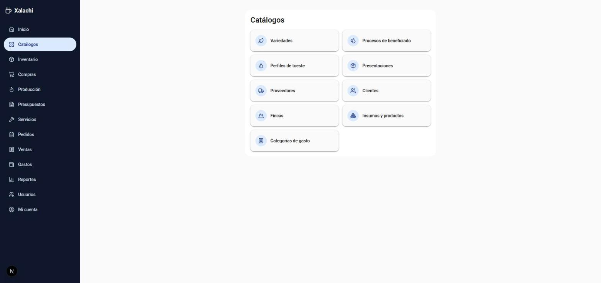
Para crear un registro en cualquier catálogo: entra a la categoría, pulsa Nuevo, llena el formulario y guarda. Para dejar de usar uno sin perder su historial, usa Desactivar en vez de Eliminar — un registro desactivado deja de aparecer como opción en los formularios nuevos, pero no borra nada de lo que ya lo usó.
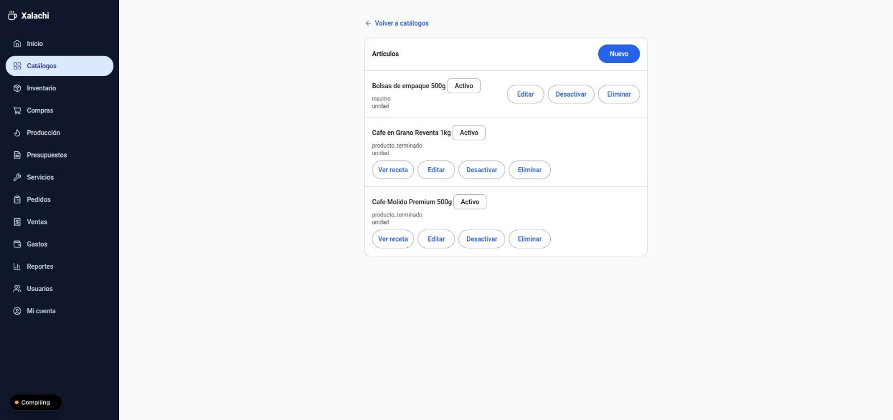
Receta de insumos de un producto
Cada producto terminado (ej. "Café Molido Premium 500g") puede necesitar varios insumos para empacarse — una bolsa, una etiqueta, un sticker — cada uno en una cantidad distinta. Esa relación se configura una sola vez por producto, en su catálogo, y después el sistema la aplica solo cada vez que se empaca.
- Entra a Catálogos → Insumos y productos.
- En la fila del producto terminado, pulsa Ver receta.
- Pulsa Agregar insumo, elige el insumo y cuántas unidades de ese insumo se gastan por cada unidad del producto.
- Repite para cada insumo que necesite ese producto.
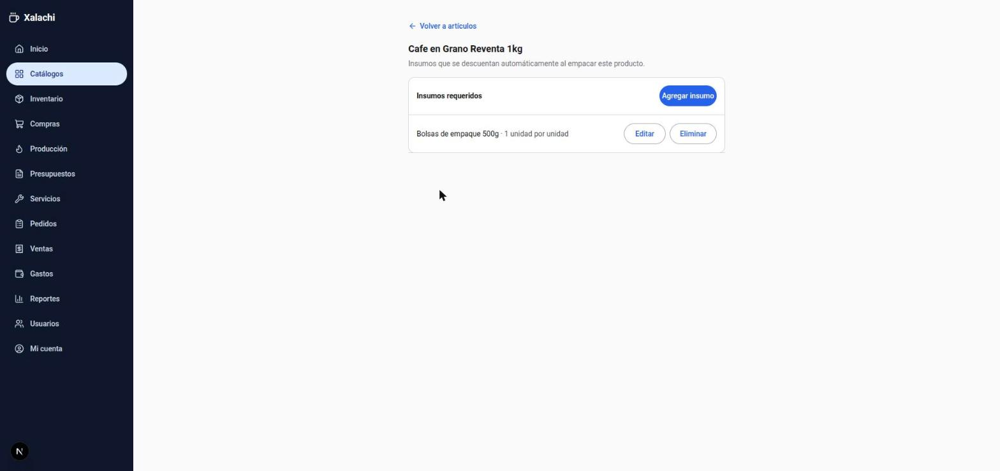
Si un producto no tiene receta configurada, se puede seguir empacando igual — simplemente no se descuenta ningún insumo automáticamente.
Inventario y lotes
Aquí se ve y se gestiona todo el café propio, desde que se recibe en cereza hasta que queda listo para vender. Un lote avanza por etapas: cereza → (pasos de beneficiado) → pergamino → verde → tostado → molido, y cada paso queda registrado con su merma.
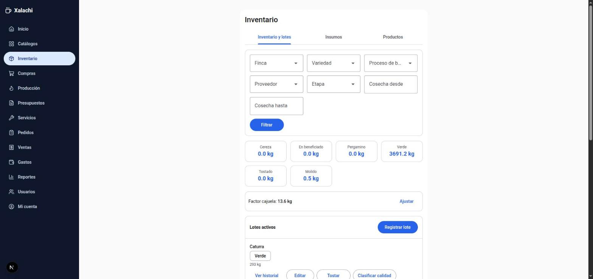
- Registrar lote crea un lote nuevo directo en la etapa que indiques (cereza, pergamino o verde) — úsalo si el café ya está en planta y no viene de una compra registrada en el sistema.
- Cada lote tiene un botón que cambia según su etapa: pasar a la siguiente etapa de beneficiado, Trillar, Tostar, Moler o Empacar.
- Clasificar calidad (solo en verde) divide un lote en primera/segunda/tercera/rechazo.
- Ver historial muestra todas las transformaciones de ese lote, de principio a fin — y desde ahí un administrador puede eliminar un empacado puntual si se registró mal (revierte el peso y el stock automáticamente).
Las pestañas Insumos y Productos (arriba de la lista de lotes) muestran las existencias de artículos — ahí se ajusta el stock manualmente cuando hace falta (ej. un conteo físico) y se fija el precio de venta de cada producto terminado.
Compras
Una compra puede ser de tres tipos, y el formulario cambia según cuál elijas:
- Lote de café (cereza, pergamino o verde) — registrarla crea automáticamente un lote nuevo en Inventario.
- Insumo (bolsas, etiquetas) — suma existencia directa al artículo, sin crear ningún lote.
- Producto terminado — para cuando compras café ya empacado de otro productor para revender, no es tuyo recién tostado.
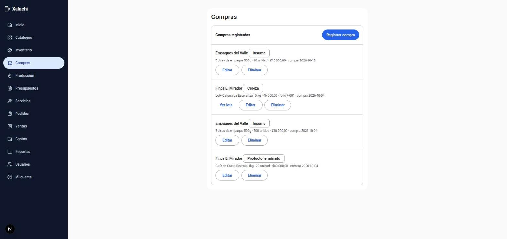
Producción
Esta pantalla es una bitácora de solo lectura: muestra, en orden, cada transformación aplicada a cualquier lote (beneficiado, trillado, tueste, molido, empacado), quién la hizo y cuándo. Las acciones en sí (tostar, moler, empacar) se hacen desde Inventario, sobre cada lote.
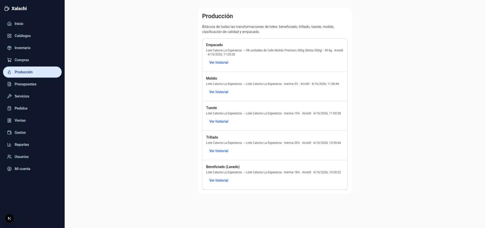
Al empacar un lote tostado o molido, el formulario pide producto, presentación y unidades — y muestra en vivo qué insumos va a descontar según la receta del producto (ver §04) antes de confirmar.
Servicios a terceros
Para cuando un cliente trae su propio café (no comprado por el negocio) y solo se le cobra por el servicio de procesarlo — beneficiado, pelado, clasificación, tueste o molido. Ese café nunca entra al inventario propio.
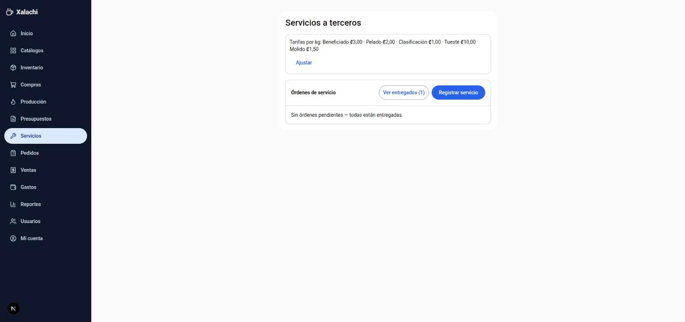
- Pulsa Registrar servicio, elige el cliente y la etapa en la que llega su café.
- Desde el detalle de la orden, aplica cada proceso que el cliente pidió — cada uno cobra según la tarifa vigente por kg.
- Cuando el cliente recoge su café, márcalo como entregado.
El cobro por estos servicios se refleja como ingreso en Reportes, igual que una venta — pero el café en sí no mueve el stock de inventario propio.
Presupuestos de servicio
Un presupuesto es una cotización previa a una orden de servicio real — útil cuando el cliente quiere saber el costo antes de comprometerse.
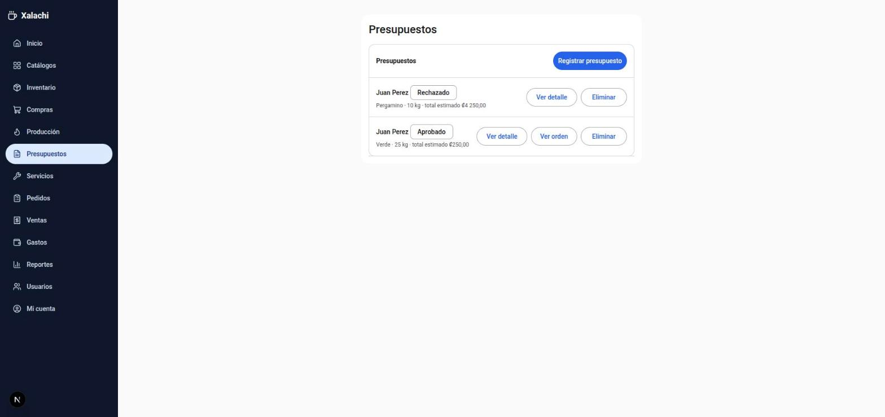
Mientras un presupuesto está en Borrador se pueden agregar o quitar procesos estimados libremente. En cuanto se Aprueba o se Rechaza, queda fijo — ya no se puede editar.
Pedidos y ventas
Un Pedido es lo que un cliente quiere comprar (café en grano a granel de un lote propio, o unidades de un artículo); al confirmarlo se convierte en una Venta, que es la que realmente descuenta el inventario y registra el cobro.
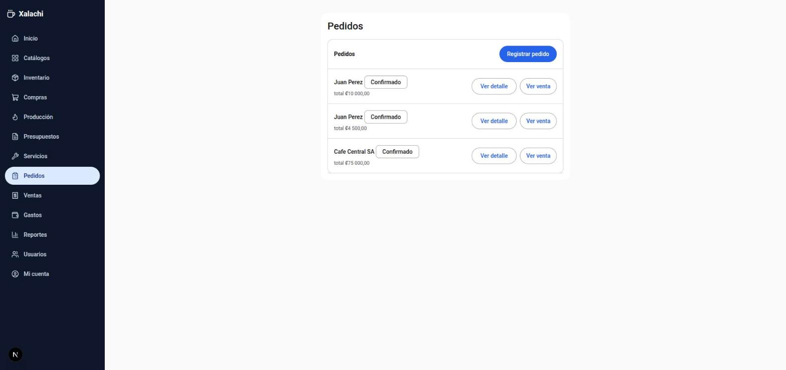
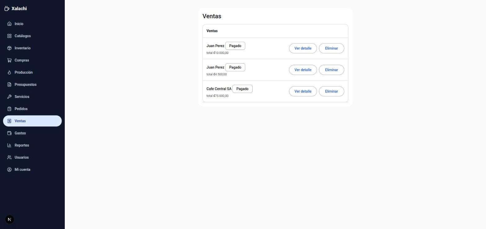
Igual que los presupuestos, un pedido solo se puede editar mientras está en Borrador. Eliminar una venta revierte el inventario automáticamente (vuelve a sumar lo que se había descontado).
Gastos operativos
Registra gastos del negocio que no son compras de café ni de insumos de producción — electricidad, agua, gas, alquiler. Solo un administrador puede registrarlos, y alimentan directamente el total de "Gastos" en Reportes.
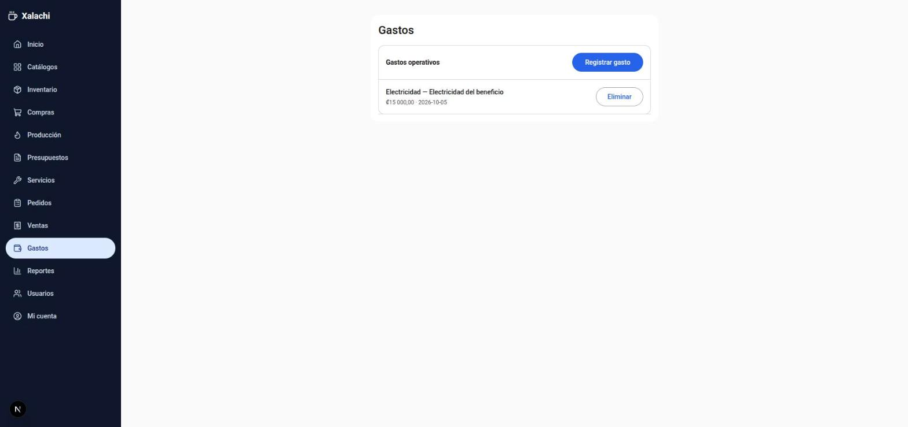
Reportes
Un reporte de caja por período: cuánto entró (ventas pagadas + servicios pagados), cuánto salió (compras + gastos operativos), y el resultado neto. También muestra lo pendiente de cobro.
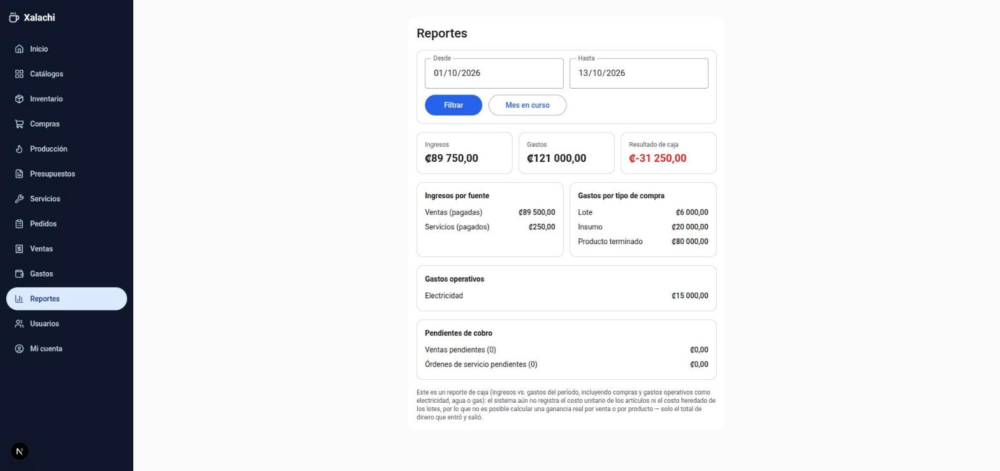
Administración de usuarios
Esta sección solo es visible y accesible para administradores.
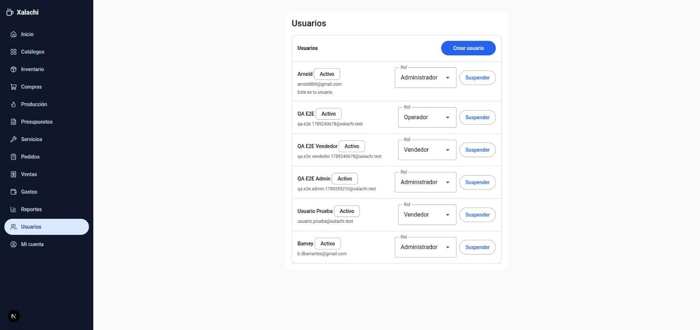
- Crear usuario da de alta una cuenta nueva con correo, contraseña inicial y rol.
- El selector de Rol junto a cada usuario cambia su rol al instante.
- Suspender bloquea el acceso de ese usuario sin borrar su cuenta ni su historial — Reactivar lo revierte. No puedes suspender tu propia cuenta.
Preguntas frecuentes
No veo el botón para crear/editar algo que debería poder hacer
Revisa tu rol en Inicio (§01). Si el módulo es de los que tu rol solo puede leer (ver tabla en §02), eso es esperado — pide a un administrador que lo registre, o que te cambie el rol si corresponde.
Empaqué un producto y me dice que falta un insumo
Revisa la receta de ese producto (§04) y la existencia real de cada insumo en Inventario → pestaña Insumos. El sistema no deja empacar si falta cualquiera de los insumos de la receta — es intencional, para que el stock de insumos nunca quede negativo.
Edité un pedido/presupuesto y no me deja
Solo se puede editar mientras está en estado "Borrador". Si ya se aprobó/confirmó, hay que trabajar sobre la venta u orden de servicio que generó, no sobre el pedido/presupuesto original.
¿Dónde cambio mi contraseña?
En Mi cuenta, al final del menú lateral — disponible para cualquier usuario, sin importar el rol.